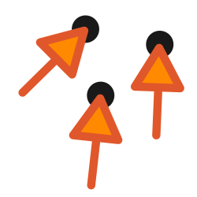
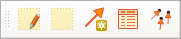

QGIS Vector Correction Plugin - Documentation¶

Introduction¶
The Vector Correction plugin allows users to warp and correct vector layers through the creation of correction vectors which specify how different parts of the vector layer should be deformed.
The plugin offers a range of techniques for warping layers, including
Linear
Projective
Helmert
Thin Plate Splines
Polynomial (Orders 1-3)
The plugin requires QGIS 3.20 or later.
The plugin is created by North Road Consulting on behalf of Natural Resources Canada.
Workflow¶
The plugin is designed around a specific workflow for correcting vector layers against a reference basemap. All plugin actions are controlled through the Vector Correction Toolbar, which will be shown as soon as the plugin is installed:

Project Setup¶
First, a QGIS project containing the reference layers to correct against must be created.
The layers to correct should then be added to the project, and each made editable via the standard QGIS Toggle Editing action:
Important: Whenever a correction is applied it will warp all layers which are marked as editable, not just the active layer!
Digitize Correction Vectors¶
Users should then draw one or more correction vectors by clicking the “Draw Corrections” tool in the plugin toolbar:

Correction vectors are created by clicking first on the origin point with the left mouse button, and then clicking on the destination point with the left mouse button. Correction vectors are shown with a numbered arrow symbol on the map:
Note: The Draw Corrections tool respects any snapping configuration currently defined for the project, so you can snap precisely to existing features if desired!
In order to make it easier to precisely position the destination point a semi-transparent overlay showing features from the target layers will follow the mouse cursor as the user draws correction vectors.
Area of Interest¶
An Area of Interest (AOI) must also be defined by clicking the AOI tool and then clicking and dragging to draw a rectangular area over the map.
This area defines the region which will be impacted by the vector correction.
Only vertices from features which fall within the AOI will be corrected, and any features or vertices which sit outside the AOI will be left untouched by the correction. This ensures that features retain their topological relationships after corrections are applied.
Apply Corrections¶
After the correction vectors have been drawn and the AOI set, the user can click the “Apply Correction” button to calculate and apply the correction to all editable layers:
The correction will be applied to the layers, but stored only in the edit buffer for the layers so can be freely undone/redone as desired. It is necessary to click the standard QGIS “Save Edits” button in order to make the changes permanent and update the underlying data source.
Correction Table¶
By clicking the “Show GCPs” button a Correction Table dock window will be opened, summarizing all digitized correction vectors will be shown:

This table includes:
A row number, which is also shown next to all vector correction lines on the map
The source X and Y coordinate
The destination X and Y coordinate
The residual for each correction. This will be shown as soon as a sufficient number of correction vectors have been drawn and it is possible to calculate the transformation required.

Rows can be removed from the table by selecting them and then clicking the “Delete Selected Rows” button.
Additionally, the toolbar contains controls for exporting and importing the vector corrections, or saving them to a standard line layer (e.g. as a Shapefile or GeoPackage).
Plugin Options¶
From the Correction Table dock clicking the Settings button will open the plugin settings. Options include:
Transformation method: specifies which mathematical method to use to calculate the transformation. Different methods will achieve different corrections, so experiment with the available options to determine which works best in different situations.
The line symbol to use to show the correction vector arrows on the map.
The fill symbol to use for showing the area of interest on the map.